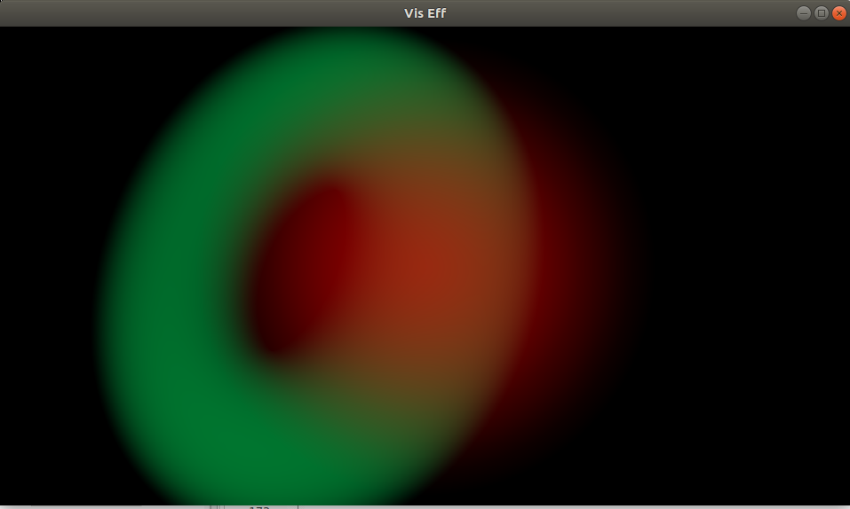
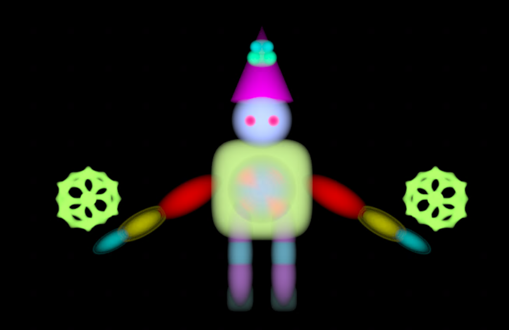
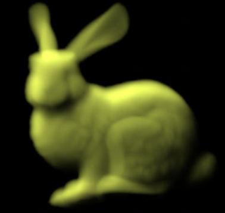
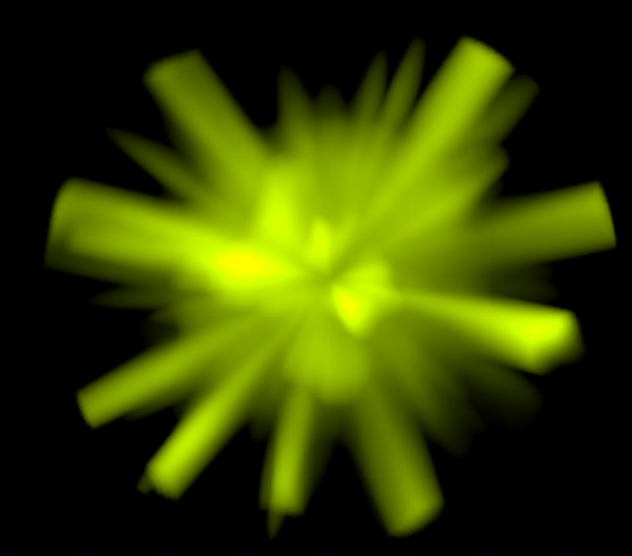
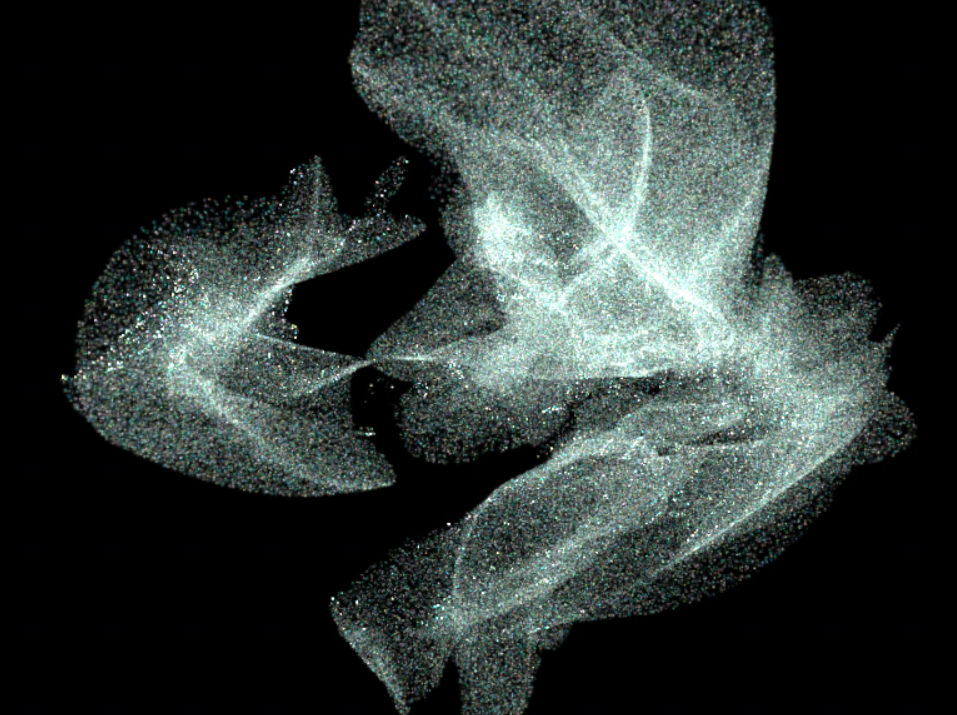
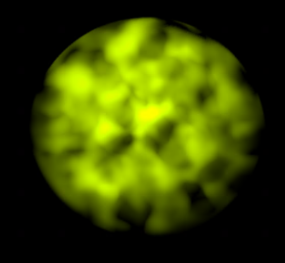

Volumetric Renderer
The following picture shows implicit functions of a sphere and torus being stamped onto a voxel grid. The ray marcher that renders these shapes was written from scratch in C++, and is displayed to the screen with OpenGL.
A humanoid figure rendered using implicit shapes (spheres, torus, icosahedron, ellipsoids, cubes, cones, etc.)
Adding point lights for cool shadow effects and rendering arbitrary shapes (level sets) with the Fast Marching Method technique.
Pyroclastic spheres using Fractal Sum Perlin Noise
Wisps
Noise stamping on voxel grids
